Hiện em đang là sinh viên năm nhất, ngành Khoa học dữ liệu tại Trường Đại học Công nghệ – ĐHQGHN.
Mục tiêu của em là trở thành một Data Engineer có tư duy phân tích, có thể xây dựng và vận hành các hệ thống dữ liệu một cách hiệu quả và bền vững. Để làm được như vậy em sẽ luôn tìm kiếm những cơ hội để học hỏi và phát triển kỹ năng số, kỹ năng tư duy xử lý và tổ chức dữ liệu của mình. Em tin rằng, mỗi dự án nhỏ này đều là một bước tiến quan trọng trong hành trình phát triển bản thân em.
Tra cứu tiến độ và chi tiết các dự án học tập của em.
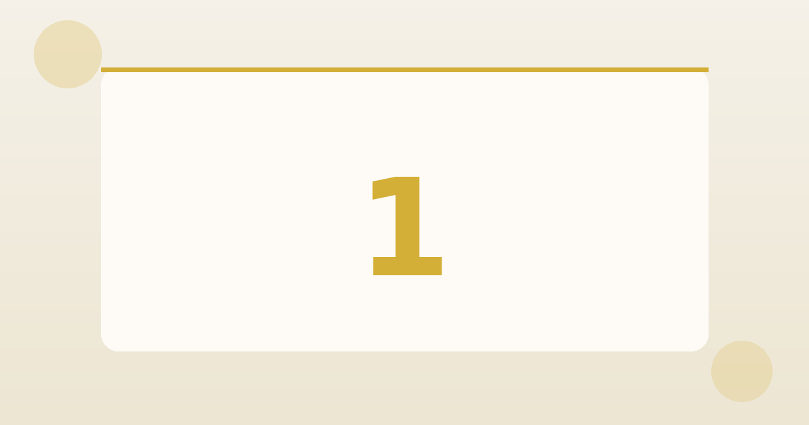
Thao tác cơ bản với tệp tin và thư mục
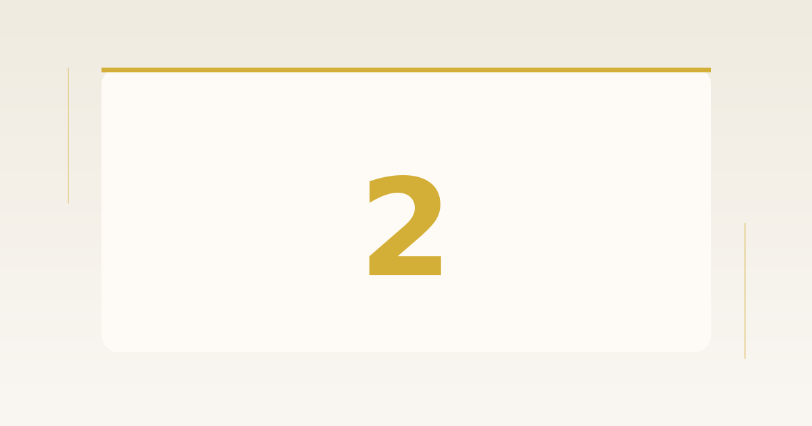
Tìm kiếm và đánh giá thông tin học thuật
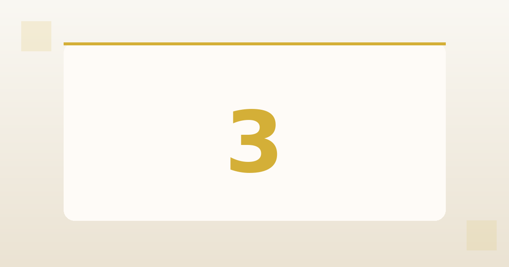
Viết Prompt hiệu quả cho các tác vụ học tập
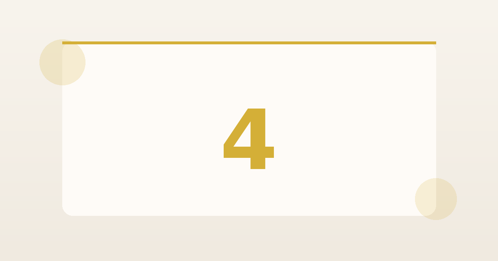
Hợp tác trực tuyến
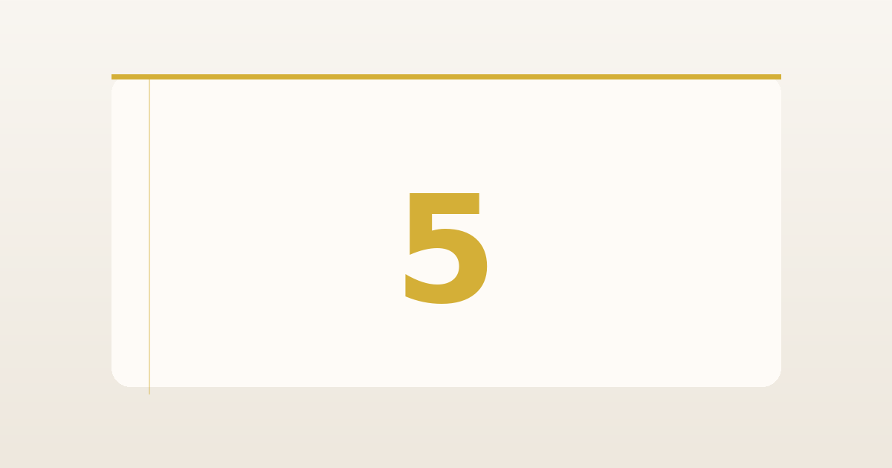
Sáng tạo nội dung với AI
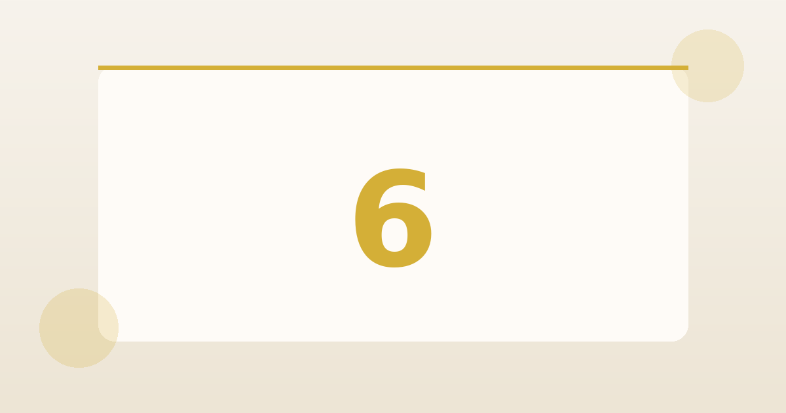
AI có trách nhiệm
Nắm vững các kỹ năng quản lý tệp tin từ cơ bản nhất: tạo, sao chép, cắt dán, xóa, và khôi phục tệp. Đây là nền tảng của năng lực số hiện đại.
Mục tiêu của khối này là xây dựng thư mục gốc và thiết lập một hệ thống phân cấp rõ ràng, giúp quản lý dữ liệu bài thực hành một cách chuyên nghiệp.
Cấu trúc thư mục gốc:
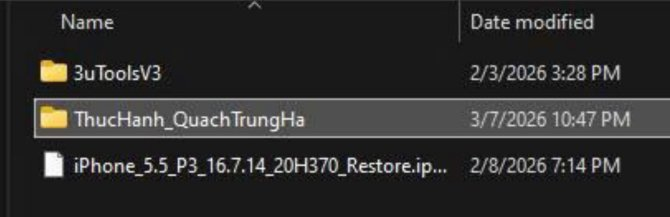
Hình 1.1: Tạo thư mục ThucHanh_QuachTrungHa
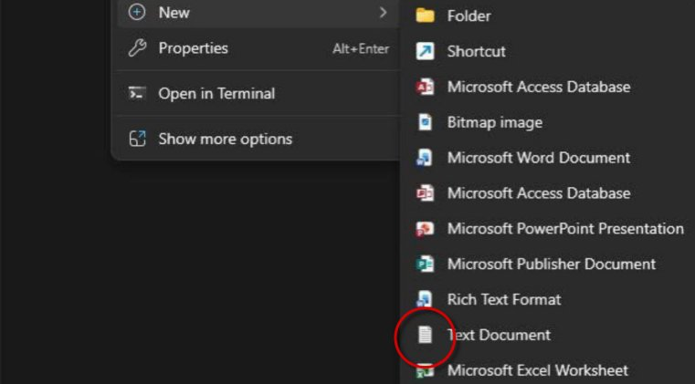
Hình 1.2: Tạo tệp GhiChu.txt khởi tạo
Đặt tên tệp rõ ràng không chỉ giúp bạn quản lý cá nhân tốt hơn mà còn là tiêu chuẩn bắt buộc khi làm việc nhóm trong ngành CNTT.
💡 Quy tắc đặt tên (Naming Convention):
Hãy luôn sử dụng phong cách PascalCase hoặc CamelCase để các thành phần trong tên tệp được phân tách rõ ràng mà không cần khoảng trắng, ví dụ: GhiChuQuanTrong.txt thay vì những cái tên chung chung không rõ nghĩa.
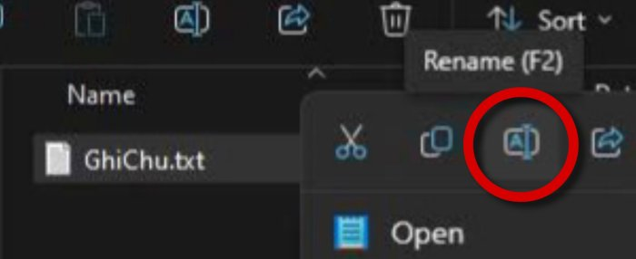
Hình 2: Đổi tên tệp GhiChu.txt → GhiChuQuanTrong.txt
Hiểu rõ sự khác biệt giữa hai thao tác này là nền tảng cốt lõi để quản lý dữ liệu một cách khoa học.
Sử dụng phím tắt Ctrl + C và Ctrl + V. Tệp tin sẽ tồn tại song song ở cả hai vị trí.
Sử dụng phím tắt Ctrl + X và Ctrl + V. Dữ liệu sẽ được di chuyển sang vị trí mới.
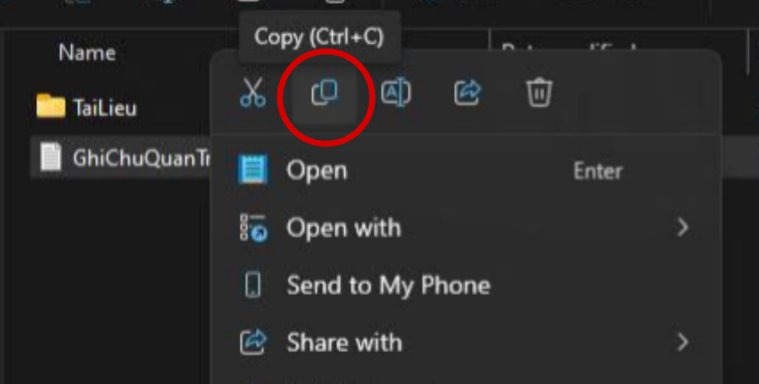
Hình 3.1: Thao tác Copy file
Hình 3.2: Thao tác Cut file
Quản lý vòng đời của tệp tin từ tạo, chỉnh sửa, đến xóa là kỹ năng cơ bản nhưng vô cùng quan trọng.
Khi bạn nhấn phím xóa, tệp tin được chuyển vào Recycle Bin. Dữ liệu vẫn tồn tại và có thể khôi phục bằng lệnh Restore.
Hình 4.1: Quản lý Recycle Bin
Sử dụng tổ hợp phím Shift + Delete để xóa ngay lập tức. Đây là thao tác không thể hoàn tác.
Hình 4.2: Cảnh báo xóa vĩnh viễn
Quy tắc đặt tên: Tránh ký tự đặc biệt: / \ : * ? " < > |
Cấu trúc thư mục: Tổ chức theo chủ đề → dễ tìm kiếm
An toàn dữ liệu: Recycle Bin là mạng an toàn cuối cùng
Chủ đề: Ứng dụng Trí tuệ Nhân tạo trong Giáo dục Đại học
Người thực hiện: Quách Trung Hà | Lớp: K70A-DS2
Trong bối cảnh kỷ nguyên số, Trí tuệ nhân tạo (Artificial Intelligence - AI) đang trở thành một trong những lĩnh vực có tác động sâu rộng nhất đến nhiều khía cạnh của đời sống xã hội, trong đó giáo dục là một trong những lĩnh vực chịu ảnh hưởng mạnh mẽ nhất. Đặc biệt từ năm 2022-2023, với sự xuất hiện của các công cụ AI tạo sinh (Generative AI) như ChatGPT, Gemini, và Claude, câu hỏi về vai trò của AI trong dạy và học đã thu hút sự quan tâm lớn từ cộng đồng nghiên cứu giáo dục toàn cầu.
Quá trình tìm kiếm tài liệu được thực hiện có hệ thống từ nhiều loại nguồn khác nhau, đảm bảo tính đa dạng và tin cậy của thông tin.
Thời gian: 2016 - 2025 (Ưu tiên các nghiên cứu cập nhật nhất)
Cơ sở dữ liệu: Google Scholar, ScienceDirect (Elsevier), Springer Nature Link, PubMed Central (PMC), MDPI, ERIC
Tổ chức & NXB: Báo cáo của UNESCO, OECD, U.S. Department of Education; sách chuyên khảo từ Pearson
Từ khóa chính: "Artificial Intelligence in Education", "AI in Higher Education", "Generative AI learning", "ChatGPT education"
Tiêu chí lựa chọn:
(1) Tạp chí khoa học có phản biện (peer-reviewed)
(2) Liên quan trực tiếp đến ứng dụng AI trong môi trường giáo dục
(3) Truy cập toàn văn (full-text)
Tổng cộng có 10 tài liệu được lựa chọn, bao gồm 7 bài báo khoa học và 3 nguồn khác. Dưới đây là bảng tổng hợp và đánh giá độ tin cậy theo tác giả/cơ quan xuất bản, phương pháp, và tính cập nhật.
| STT | Tên tài liệu & Tác giả | Cơ quan XB | Năm | Độ tin cậy |
|---|---|---|---|---|
| 1 | Chen et al. - AI in Education: A systematic literature review | ScienceDirect | 2024 | RẤT CAO |
| 2 | Martinez-Maldonado et al. - Systematic Review of AI in Education | MDPI | 2025 | RẤT CAO |
| 3 | Ifenthaler et al. - AI in Education: Implications... | Springer | 2024 | RẤT CAO |
| 4 | Treve, M. - Integrating AI in Education: Impacts... | Int. J. VETR | 2024 | CAO |
| 5 | Al-Zahrani et al. - Perceived Impact of AI on Academic Learning | PubMed Central | 2024 | RẤT CAO |
| 6 | Singh et al. - AI in Teaching and Learning of Science | Springer | 2024 | RẤT CAO |
| 7 | Bewersdorff et al. - Unveiling the shadows: Beyond the hype... | Heliyon, PMC | 2024 | RẤT CAO |
| 8 | Ju, Q. - Negative Impact of Generative AI on Scientific Learning... | arXiv | 2023 | CAO |
| 9 | U.S. Dept. of Education - AI and the Future of Teaching... | ERIC | 2023 | RẤT CAO |
| 10 | Luckin et al. - Intelligence Unleashed: An Argument... | Pearson | 2016 | CAO |
Nhiệm vụ này đã giúp hình thành năng lực cốt lõi trong việc truy vấn và phê phán thông tin học thuật. Trí tuệ nhân tạo trong giáo dục là lĩnh vực nghiên cứu đang phát triển nhanh chóng với nhiều hứa hẹn nhưng cũng không ít thách thức.
AI có thể nâng cao đáng kể chất lượng và hiệu quả giáo dục nếu được triển khai có chủ đích, có đạo đức và có sự đồng hành của giảng viên có năng lực. Việc ứng dụng AI đòi hỏi tư duy hệ thống để đánh giá độ tin cậy và nhận diện giới hạn - nền tảng quan trọng cho định hướng ngành Khoa học dữ liệu.
Nghiên cứu, thử nghiệm và phân tích chuyên sâu các cấp độ Prompt từ cơ bản đến nâng cao để tối ưu hóa quá trình học tập và làm việc cùng hệ thống AI.
Lựa chọn ba tác vụ thiết yếu trong môi trường học thuật, mỗi tác vụ đối mặt với những thách thức cụ thể đòi hỏi kỹ năng giao tiếp chuẩn xác với AI.
Thách thức: Cần xác định đúng loại tài liệu, chiều dài tóm tắt, mức độ chuyên ngành, và đối tượng tiếp nhận để tối ưu hóa 80% thời gian đọc hiểu.
Thách thức: Kiểm soát độ sâu kiến thức, duy trì tính chính xác, thêm ví dụ minh họa trực quan, tránh việc giải thích quá hàn lâm (VD: Khái niệm Entropy thông tin).
Thách thức: Kiểm soát linh hoạt số lượng, độ khó, phân tầng câu hỏi theo thang Bloom (nhớ/hiểu/vận dụng) và đảm bảo có đáp án chi tiết đi kèm.
Phân tích sự khác biệt rõ rệt về chất lượng đầu ra thông qua 3 cấp độ Prompt được thử nghiệm trên cùng một tác vụ (Case Study: Tóm tắt bài báo nghiên cứu định lượng).
"Tóm tắt bài báo này cho tôi."
❌ Kết quả (3.5/10): Trả về một đoạn văn tự do ~150 từ, thiếu tổ chức, bỏ sót hoàn toàn phương pháp nghiên cứu và hạn chế.
"Hãy tóm tắt bài báo nghiên cứu sau theo cấu trúc: 1. Mục tiêu 2. Phương pháp 3. Kết quả chính 4. Hạn chế 5. Ý nghĩa. Độ dài: 200-250 từ. Dùng ngôn ngữ học thuật dễ hiểu."
⚠️ Kết quả (7.0/10): Cung cấp đủ 5 mục theo yêu cầu, có trích dẫn số liệu. Dùng được nhưng thiếu chiều sâu phê phán học thuật.
"Bạn là trợ lý nghiên cứu học thuật... Nhiệm vụ: tạo bản tóm tắt phân tích... [Cung cấp ví dụ chuẩn mẫu]... Hãy tư duy từng bước: xác định loại nghiên cứu → đánh giá phương pháp → tổng hợp kết quả → nhận định độc lập."
✅ Kết quả (9.5/10): Tự động đánh giá chất lượng nghiên cứu, chỉ ra bias tiềm ẩn, đưa ra khuyến nghị. Đầu ra đạt chuẩn chuyên nghiệp dùng ngay (chỉ cần chỉnh sửa 5%).
Phân tích các cơ chế tạo nên sự khác biệt vượt trội của một Prompt xuất sắc thông qua các thủ thuật điều khiển mô hình.
Gán vai trò chuyên gia (VD: "Giáo sư 20 năm kinh nghiệm") giúp AI kích hoạt các khuôn mẫu ngôn ngữ và kiến thức chuyên môn, thay đổi góc nhìn khác biệt so với phản hồi thông thường.
Buộc AI phải trình bày quy trình "tư duy từng bước" trước khi đưa ra đáp án. Thao tác này giúp AI tự kiểm tra lý luận, giảm mạnh rủi ro lỗi logic trong phân tích học thuật.
Cung cấp 1-2 ví dụ chuẩn làm khuôn mẫu. AI tự động học hỏi định dạng, mức độ chi tiết và phong cách hành văn từ ví dụ, ngăn chặn các hiểu lầm về yêu cầu.
Xác định chính xác tệp khán giả (Audience) và chia nhỏ lệnh thành các "giàn giáo" tuần tự để AI không bỏ sót yêu cầu, tự động hiệu chỉnh độ phức tạp ngôn ngữ thích hợp.
Phát hiện then chốt: Đầu tư thêm 2 phút viết Prompt nâng cao mang lại chất lượng tăng gấp 3-4 lần. Dưới đây là bộ quy tắc đúc kết từ thực nghiệm:
💡 Công thức Template Cốt lõi:
[Vai trò] + [Ngữ cảnh/Khán giả] + [Ví dụ mẫu] + [Yêu cầu từng bước] + [Định dạng đầu ra]
Tổng kết quá trình ứng dụng thực tiễn hệ sinh thái công cụ cộng tác trực tuyến nhằm tối ưu hóa quy trình làm việc nhóm, lưu trữ dữ liệu và phát triển dự án cá nhân định hướng Data Engineering.
Dự án được thực hiện trong bối cảnh thực tế đòi hỏi sự linh hoạt và khả năng điều phối song song nhiều luồng công việc phức tạp.
Điều phối đồng thời 2 dự án trọng điểm: (1) Xây dựng nền tảng website thương mại cho tiệm bánh gia đình và (2) Phát triển hệ thống AI Emergency Agent tham gia đấu trường Hackathon chuyên nghiệp[cite: 492].
Với mục tiêu phát triển theo con đường Data Engineer, trọng tâm được đặt vào việc tối ưu hóa đường ống xử lý thông tin (Data Pipeline), tổ chức lưu trữ khoa học và đảm bảo luồng giao tiếp thời gian thực không bị đứt gãy[cite: 491].
Thiết lập bộ công cụ quản trị dựa trên 3 nhóm chức năng cốt lõi nhằm đảm bảo tính đồng bộ và hiệu suất[cite: 493].
Ứng dụng: Lập sơ đồ Kanban, chia nhỏ task lập trình Python & DB[cite: 494].
Hiệu quả: Kiểm soát chặt chẽ tiến độ, ngăn chặn triệt để tình trạng chồng chéo nhiệm vụ[cite: 494].
Ứng dụng: Soạn script presentation (Docs) và lưu trữ Dataset tập trung (Drive)[cite: 494].
Hiệu quả: Chỉnh sửa đồng thời realtime, tra cứu tài liệu nhanh chóng, mọi lúc mọi nơi[cite: 494].
Ứng dụng: Phân luồng channel chuyên biệt (Technical, Design, General)[cite: 494].
Hiệu quả: Giảm thiểu họp hành không cần thiết, xử lý nóng sự cố kỹ thuật ngay lập tức[cite: 494].
Minh họa cụ thể các thao tác thực hành quản trị trên nền tảng số.
Ứng dụng bảng Kanban để theo dõi tiến trình dự án AI Emergency Agent. Các thẻ công việc (Cards) được thiết lập vòng đời rõ ràng: từ thiết kế Logic Flow sơ khởi đến giai đoạn triển khai Code thực tế trên môi trường VS Code.
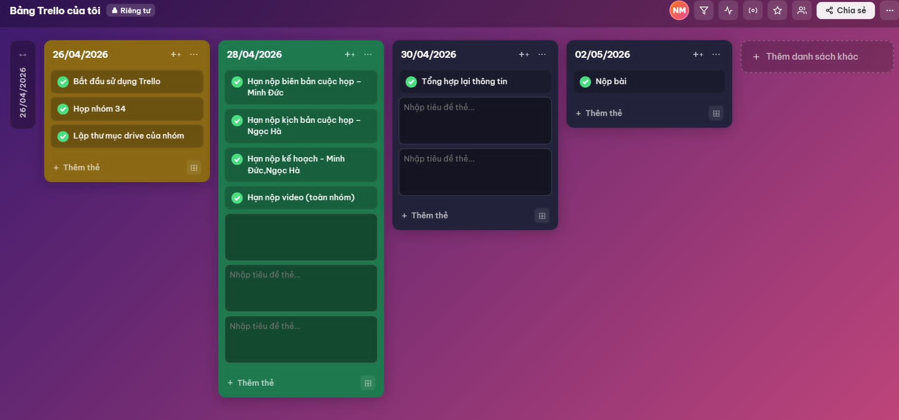
Trực tiếp tham gia biên tập tài liệu mô tả thuật toán lõi. Tận dụng triệt để tính năng "Version History" để truy xuất, đối chiếu và kiểm soát an toàn mọi thay đổi quan trọng từ các thành viên trong nhóm.
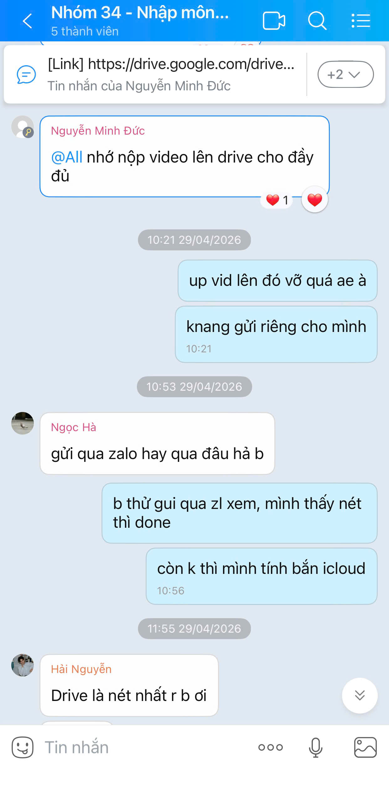
Kiến trúc cây thư mục logic, phân tách rõ ràng tài nguyên: Tập tin CSV phục vụ Training Model tách biệt hoàn toàn với mã nguồn HTML/CSS giao diện tiệm bánh. Cấu trúc này tối ưu hóa tốc độ truy xuất tài nguyên cho toàn đội.
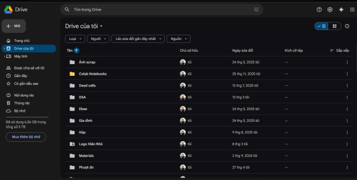
Đánh giá tổng quan về sự thay đổi năng suất và tư duy khi chuyển đổi số quy trình làm việc.
Tiết kiệm 40% quỹ thời gian so với quy trình vận hành truyền thống[cite: 540]. Điểm sáng lớn nhất là sự kết nối liền mạch giữa IDE (VS Code) và GitHub, đảm bảo an toàn tuyệt đối cho quản trị mã nguồn (Source Control)[cite: 541].
Nỗi đau: Phân tán sự tập trung do bão thông báo (Notifications) từ đa nền tảng [cite: 542].
Hành động: Áp dụng kỷ luật "Deep Work" với khung giờ đóng và thiết lập ma trận ưu tiên thông báo (Priority Notifications) trên các kênh chat[cite: 543].
"Kỹ năng làm chủ công cụ số đã vượt qua ranh giới của một phương tiện hỗ trợ đơn thuần; nó chính thức trở thành tư duy quản trị bắt buộc – một năng lực sinh tồn đối với một Kỹ sư Dữ liệu (Data Engineer) trong bối cảnh công nghệ tương lai." [cite: 544]
Xây dựng bài thuyết trình học thuật "Trí tuệ nhân tạo và tương lai của giáo dục" thông qua việc phối hợp và làm chủ tối ưu tổ hợp 4 công cụ AI tạo sinh: Claude, ChatGPT, DALL-E 3 và Canva AI.
Mục tiêu của khối này là xác định cấu trúc dự án sáng tạo slide deck 10 trang phục vụ seminar học thuật, kết hợp linh hoạt văn bản, hình ảnh gốc và bố cục infographic chuyên nghiệp.
Chuyên trách xử lý văn bản học thuật độ chính xác cao, lập luận logic, xây dựng dàn ý cấu trúc và nội dung chi tiết.
Khai thác ý tưởng đa chiều (Brainstorming), thu thập số liệu thống kê quốc tế và thiết lập bộ câu hỏi thảo luận mở.
Minh họa trực quan hóa ý tưởng thành tài nguyên hình ảnh gốc chất lượng cao theo tỷ lệ chuẩn 16:9, tránh bản quyền.
Hỗ trợ thiết kế tổng thể, kiến tạo layout tự động qua Magic Design và tối ưu hóa hệ thống tiêu đề bằng Magic Write.
Ghi lại chi tiết chuỗi câu lệnh (Prompts) điều khiển và kết quả phản hồi thực tế từ các hệ thống trí tuệ nhân tạo.
"Hãy tạo dàn ý chi tiết cho bài thuyết trình 10 slide về chủ đề 'Trí tuệ nhân tạo và tương lai của giáo dục'. Mỗi slide cần có tiêu đề, 3-4 ý chính và gợi ý hình ảnh minh họa phù hợp."
"Dựa trên dàn ý trên, viết nội dung chi tiết cho slide 4 về 'Lợi ích của AI trong giáo dục cá nhân hóa'. Hãy sử dụng ngôn ngữ học thuật, súc tích, phù hợp với khán giả là sinh viên đại học và giảng viên."
"Cung cấp 5 số liệu thống kê cụ thể và có nguồn gốc rõ ràng về mức độ ứng dụng AI trong giáo dục toàn cầu năm 2023-2024, kèm tên tổ chức nghiên cứu hoặc báo cáo."
"Tạo 5 câu hỏi thảo luận mở, kích thích tư duy phản biện cho khán giả sau khi xem bài thuyết trình về AI trong giáo dục."
"Create a photorealistic digital illustration showing a futuristic classroom where students use holographic AI interfaces to learn. Include diverse students aged 18-22, warm natural lighting, modern architecture. Style: professional, optimistic, suitable for academic presentation. 16:9 ratio."
"Create a clean, minimalist infographic showing 4 benefits of AI in personalized education: adaptive learning, real-time feedback, data analytics, individual pathways. Use icons and blue-green color scheme. White background, professional style."
"Generate a professional presentation template for academic topic 'AI in Education'. Color scheme: navy blue and white with accent colors. Modern, clean design suitable for university seminar."
"Improve these slide titles to be more engaging and action-oriented: 1. AI và Giáo dục, 2. Lợi ích, 3. Thách thức, 4. Tương lai. Keep them concise (max 8 words each)."
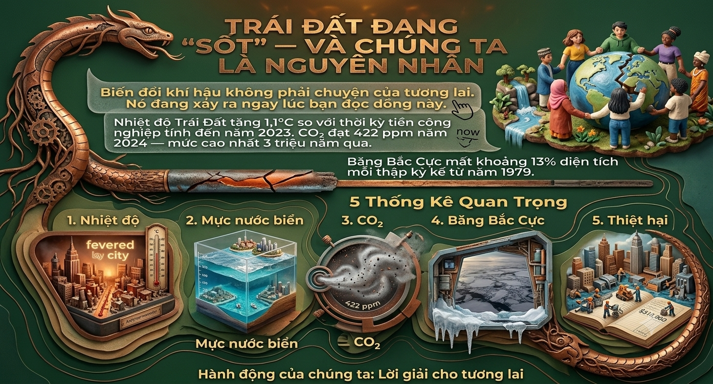
Hình 5.1: Minh họa hành trình tối ưu hóa các dòng lệnh AI hỗ trợ sáng tạo nội dung
Sự kết hợp hài hòa khi AI đóng vai trò trợ lý tăng năng suất vật lý (< 50%) và con người nắm giữ quyền kiểm soát tư duy, định hướng học thuật (> 50%).
Phân tích sâu sắc ưu và khuyết điểm của từng nền tảng công nghệ trong việc chuyển hóa quy trình làm việc từ tuyến tính truyền thống sang vòng lặp phi tuyến tính.
🧠 Claude vs ChatGPT (Văn bản học thuật):
Claude vượt trội về tư duy logic chặt chẽ, kiểm soát hallucination tốt và bám sát ngữ cảnh học thuật. ChatGPT phát huy thế mạnh vượt bậc trong giai đoạn kích hoạt ý tưởng sáng tạo và tạo các biến thể câu hỏi đa chiều.
🖼️ DALL-E 3 & Canva AI (Visual & Thiết kế tổng thể):
DALL-E bám sát mô tả văn bản xuất sắc nhưng xử lý chữ đồ họa lỗi font chữ nghiêm trọng. Canva AI có tính thực dụng cao, tạo layout nhanh, tuy nhiên Magic Write tiếng Việt chưa tự nhiên, vẫn phụ thuộc tinh chỉnh thủ công.
⏱️ Tối ưu hóa chu trình thời gian lao động:
Tổng thời gian sản xuất một slide deck chuyên nghiệp giảm mạnh từ 8-12 giờ xuống còn 4-5 giờ. Giải phóng hoàn toàn năng lượng thô sang tập trung xử lý phân tích "tinh".
Phản tư nghiêm túc về các rủi ro cốt lõi khi ứng dụng AI tạo sinh vào môi trường nghiên cứu và giáo dục học thuật chuyên nghiệp.
Bản chất công nghệ: AI không thay thế tư duy sáng tạo của con người mà đóng vai trò khuếch đại năng lực số.
Năng lực thế kỷ 21: Chất lượng đầu ra phụ thuộc hoàn toàn vào kỹ năng Prompt Engineering và năng lực đánh giá phản biện.
Kỹ năng tích hợp: Biết cách phối hợp đa công cụ AI bổ khuyết cho nhau là chìa khóa tối ưu hóa năng suất sáng tạo.
Báo cáo thực hành rèn luyện kỹ năng xây dựng giới hạn đạo đức số, tuân thủ chính sách học thuật và thiết lập bộ nguyên tắc cá nhân khi ứng dụng Trí tuệ Nhân tạo vào nghiên cứu.
Tìm hiểu và đối chiếu xu hướng quy định học thuật liên quan đến Trí tuệ nhân tạo (cập nhật 09/2024).
Sinh viên được phép sử dụng AI như công cụ hỗ trợ, không phải thay thế tư duy. Mọi sự can thiệp của AI trong bài nộp phải được ghi chú/khai báo rõ ràng. Nghiêm cấm dùng AI để tạo ra toàn bộ nội dung bài luận.
Có quy định tương tự nhưng nghiêm ngặt hơn ở các môn kỹ thuật: yêu cầu sinh viên phải nộp kèm nhật ký sử dụng AI. Xu hướng chung tại VN là "Cho phép có kiểm soát" thay vì cấm hoàn toàn.
Nhiệm vụ ứng dụng: Viết bài luận "Tác động của mạng xã hội đến sức khỏe tâm thần sinh viên". Sử dụng Claude Sonnet làm trợ lý.
"Hãy liệt kê 5 góc độ học thuật để phân tích tác động của mạng xã hội đến sức khỏe tâm thần sinh viên."
⚡ Đánh giá & Xử lý: AI đề xuất 5 góc độ (so sánh xã hội, FOMO, rối loạn giấc ngủ, nghiện thông tin, mạng lưới hỗ trợ). Phân tích đánh giá: Giữ lại 3 góc độ sắc sảo, loại bỏ 2 ý quá chung chung. Không bê nguyên xi gợi ý.
"Đọc đoạn luận văn này và đóng vai phản biện độc lập để góp ý về lập luận: [đoạn văn draft]"
⚡ Đánh giá & Xử lý: AI chỉ ra luận điểm thiếu bằng chứng định lượng, đề xuất dùng số liệu từ WHO. Hành động: Trực tiếp tiến hành tra cứu nguồn gốc độc lập (fact-check), xác nhận tính đúng đắn trước khi tích hợp vào bài.
📌 Tuyên bố minh bạch (Khai báo sử dụng AI):
Bài luận được soạn thảo hoàn toàn bởi tác giả. AI (Claude) được sử dụng ở bước Brainstorm dàn ý và phản biện lập luận. Mọi nội dung đưa vào bài đều đã được kiểm duyệt, xác minh và diễn đạt lại 100% bằng văn phong cá nhân.
Nhận diện rõ ràng ranh giới giữa việc ứng dụng công nghệ làm đòn bẩy và hành vi gian lận học thuật.
Dùng AI brainstorm ý tưởng, kiểm tra lỗi ngữ pháp, hoặc tra cứu tài liệu căn bản. Hoàn toàn không vi phạm.
Nhờ AI viết đoạn mẫu rồi chỉnh sửa lại. Mức độ phụ thuộc cao và cần căn cứ vào quy định cụ thể của từng giảng viên.
Nộp nguyên văn đầu ra của AI tạo sinh mà không khai báo, hoặc bypass hoàn toàn quy trình suy nghĩ.
🔍 Sở hữu trí tuệ: Văn bản do AI tạo ra hiện chưa có chủ thể bản quyền rõ ràng theo pháp luật. Trích dẫn AI với tư cách là một "công cụ phần mềm" là thực hành chuẩn xác nhất hiện nay.
🧠 Tác động phát triển: Sự lạm dụng thụ động làm thui chột tư duy phản biện, kỹ năng tổng hợp và năng lực biểu đạt ngôn ngữ. Đây là rủi ro lớn nhất cho nghề nghiệp tương lai.
Cẩm nang nguyên tắc được đúc kết để duy trì tính chính trực trong mọi nhiệm vụ học tập.
Luôn phác thảo ý tưởng cốt lõi của riêng mình trước khi hỏi AI để không bị định kiến (anchoring bias) bởi máy móc.
Không dùng số liệu/trích dẫn nếu chưa tra cứu nguồn gốc độc lập (Đề phòng AI hallucination bịa đặt thông tin).
Ghi chú rõ trong mọi bài luận: AI đã được sử dụng ở bước nào, với mục đích gì và công cụ cụ thể nào.
Viết và diễn đạt lại bằng ngôn ngữ riêng. Không copy nguyên văn dù cấu trúc của AI có vẻ bóng bẩy, hoàn chỉnh.
Sử dụng thuật toán để hiểu khái niệm sâu sắc hơn, không phải phao cứu sinh để bỏ qua quá trình đọc tài liệu gốc.
Tuân thủ tuyệt đối syllabus và hướng dẫn của từng giảng viên do mỗi môn có mức độ chấp nhận AI khác nhau.
Sơ đồ 5 bước làm việc có trách nhiệm cùng Trí tuệ Nhân tạo.
Nhìn lại chặng đường xây dựng Portfolio này, em nhận ra đây không chỉ là việc hoàn thành một môn học, mà là quá trình "nâng cấp" hệ điều hành tư duy của bản thân. Từ những bỡ ngỡ ban đầu, em đã học cách làm chủ công nghệ thay vì bị nó chi phối, biến các công cụ số thành đòn bẩy vững chắc cho con đường trở thành một Data Engineer trong tương lai.
Nắm vững bức tranh toàn cảnh về hệ sinh thái AI tạo sinh. Hiểu rõ bản chất của liêm chính học thuật trong thời đại số và nguyên lý vận hành của các mô hình ngôn ngữ lớn (LLM), từ đó áp dụng hiệu quả vào quá trình nghiên cứu tài liệu và xử lý thông tin phức tạp.
Làm chủ kỹ thuật Prompt Engineering nâng cao (chuyển đổi từ câu lệnh cơ bản sang cấu trúc: Vai trò + Ngữ cảnh + Ví dụ + Yêu cầu định dạng). Phát triển kỹ năng tư duy phản biện để đánh giá, tinh chỉnh đầu ra của AI và năng lực tổ chức luồng công việc số (Digital Workflow) chuyên nghiệp.
Chuyển dịch hoàn toàn sang tư duy "Human-in-the-loop": Luôn giữ vững vai trò kiểm soát lõi. AI chỉ là người trợ lý tăng cường tốc độ xử lý, còn khả năng phác thảo ý tưởng, kiểm chứng sự thật và tư duy logic mới là giá trị cốt lõi không thể thay thế của người kỹ sư.
Em tự hào nhất về dự án Nghiên cứu Kỹ năng Viết Prompt Hiệu quả (Bài 3) và Bộ nguyên tắc cá nhân sử dụng AI (Bài 6). Quá trình thử nghiệm 9 phiên bản prompt khác nhau đã giúp em nhận ra: "Chất lượng đầu ra của AI phản chiếu chính xác chất lượng tư duy đầu vào của người dùng". Nó chứng minh rằng AI không làm ta lười đi, mà buộc ta phải tư duy mạch lạc và có cấu trúc hơn bao giờ hết.
Thách thức lớn nhất là vượt qua "ảo giác AI" (AI Hallucination) và sự cám dỗ của việc sao chép thụ động. Ban đầu, em mất rất nhiều thời gian để kiểm chứng các trích dẫn học thuật do AI sinh ra. Cách em vượt qua là thiết lập kỷ luật thép: "Tôi tư duy trước, AI hỗ trợ sau". Luôn tự phác thảo luồng ý tưởng và đối chiếu chéo thông tin từ các nguồn độc lập trước khi tích hợp vào sản phẩm cuối cùng.
Áp dụng triệt để "Bộ nguyên tắc sử dụng AI có trách nhiệm" vào các môn chuyên ngành Khoa học Máy tính tại UET. Sử dụng AI như một gia sư lập trình để giải thích các thuật toán phức tạp (Data Structures, Algorithms) thay vì để nó code hộ toàn bộ, đảm bảo hiểu sâu bản chất vấn đề.
Tận dụng kỹ năng Prompt Engineering học thuật để tối ưu hóa việc tóm tắt và đọc hiểu các bài báo nghiên cứu chuyên sâu (Research Papers). Thiết lập quy trình đánh giá nguồn tài liệu nghiêm ngặt để xây dựng kho dữ liệu kiến thức (Knowledge Base) cá nhân chuẩn xác và chất lượng.
Sẽ tiếp tục duy trì và nâng cấp Portfolio này thành một "Live Document" (Tài liệu sống). Tích hợp thêm các dự án cá nhân về Python, SQL và Data Pipeline để biến đây thành hồ sơ năng lực trực quan, chuyên nghiệp, tạo lợi thế cạnh tranh thực tế khi ứng tuyển các vị trí Data Engineering.
"AI không thay thế tư duy sáng tạo — nó tăng cường và giải phóng sức sáng tạo của con người khi được sử dụng bằng một cái đầu lạnh và một ý thức trách nhiệm cao. Hành trình số của tôi thực sự chỉ mới bắt đầu."— Quách Trung Hà